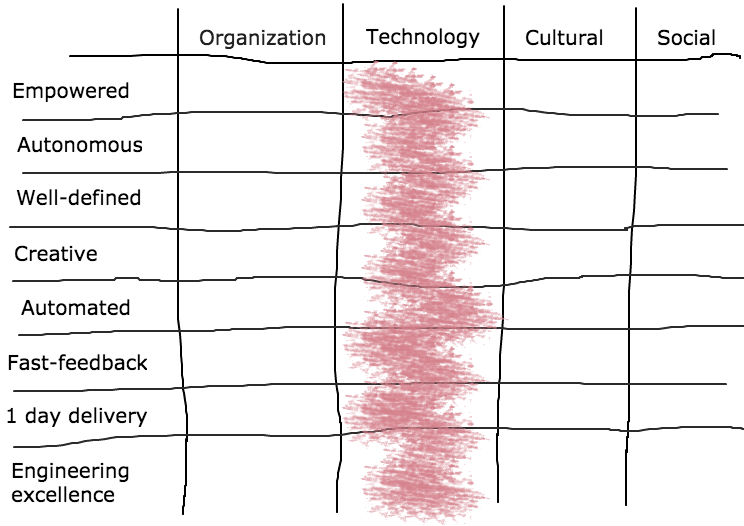

A road to micro engines
How we transform our monolithic application
Created by Krisztian Lachata / @lachata_k
Developer @ GumtreeAGENDA
- Changing environment has impact on our IT operations
- What is our IT strategy to mitigate risk
Constantly changing environment
- We are operating in a constantly changing business and technological environment
- Solutions and processes which once proved to be efficient in the past, now slows down delivery
Time to market!
Key word from our IT vision
- ... my team feels EMPOWERED ...
- my team is AUTONOMOUS ...
- my role, my RESPONSIBILITIES, my team’s ownership, the boundaries ... are all WELL-DEFINED.
- our work is CREATIVE, everything we do more than once is AUTOMATED
- we love FAST FEEDBACK ... no more than ONE DAY FROM GOING LIVE
- ... ENGINEERING EXCELLENCE ... We’re PROUD of what we do ...
Constraints
- Organizational
- Technological
- Cultural
- Social
Scope of this presentation
Our IT
Slice the beast
aka
Microservices
Collection of development best practices and techniques which has huge impact on all the technical considerations
Autonomy!
With FREEDOM comes RESPONSIBILITY
Single Responsibility Principle
- Write programs that do one thing and do it well
- Write programs to work together

Domain Driven Design
Placing the project's primary focus on the core domain and domain logic
Strategic and tactical patterns
- Bounded Context
- Context mapping
- Ubiquitous language
- Hexagonal architecture
- Anti-corruption layer
- Domain events
- Factories, Repositories, Entities, Value objects
Bounded Context

Hexagonal architecture
Dependency inversion
One of the main principles in our microservice design
Hexagonal architecture
Isolation at multiple level
- Build and deploy in isolation
- Test in isolation
- Run in isolation
- Fault isolation
Fault isolation
- Self heal - Resiliency
- Avoid cascading errors
- Fail fast
- Timeout
Integration is risk
Circuit breaker
One microservice is no microservice
They come in systems
How to build, test, run, integrate them?
Sync VS Async
Rest is still considered to be the default approach
Synchronous communication
OpenAPI-Specification - Swagger
Well defined and controlled
API definition
- API definition first
- Version controlled
- Generate clients from API definition
- Backward compatible
- Feature switch
- Follow up stories
- Common API definition
Asynchronous communication
Event driven architecture
- Events flow in decoupled systems
- Decoupling in space and time
- Avoiding cascading failures
- One-way "Fire-and-forget"
- No point-to-point
- Helps in isolation
- High performance and scalability
Domain Events what domain experts care about
Asynchronous communication
Back Pressure
- Push model instead of pull model
- Push events can be observed by multiple subscribers
- Fast system should not overload slow system
- Avoiding unbounded buffering
We use RxJava, Akka Streams
Backend For Frontend
Rather than provide a one-size-fits-all style API, the BFF can expose a different API for each client
We use this pattern for our mobile platform
Benefits of BFF
- Reduce Chattiness
- Distribute API Development
- Mitigate Deployment Risks
- Support Multiple Languages
- Distribute Operations
API Gateway
Benefits of API Gateway
- Access Control
- Traffic Management
- Versioning
Avoid leaking business logic into them
Consumer Driven Contracts
- A Contract is a collection of agreements between the Consumer and an API Provider that describes the interactions that can take place between them
- Consumer Driven Contracts is a pattern that drives the development of the Provider from its Consumers point of view
Pact is a testing tool that guarantees those Contracts are satisfied
Define Pacts
Verify Pacts
Enterprise Service Bus
and
Enterprise Integration Patterns
- Today's applications rarely live in isolation
- Architecting integration solutions is a complex task
Don't blur ESBs and API gateway and avoid leaking business logic into them
Benefits of ESB
- 150+ connectors across various categories
- Transports
- Formats & protocols
- Route, Mediate and Transform
Pipeline as code
- Build pipeline is crucial for microservices working together
- Various phases in software lifecycle
- Interaction with different tools
- Versioned and Tested

We use Jenkinsfile + custom pipeline DSL
DevOps Delivered
- Configuration management with Consul
- Terraform helps write, plan, and create infrastructure as code
Immutable infrastructure
- Immutable infrastructure provides stability, efficiency
- Simplifying operations
- Continuous deployments, fewer failures
- Helps moving to cloud and achieve 1-push-1-release


Platform standards
Gumtree platform is a set of AUTONOMOUS but COLLABORATING teams!
How to engage developers?
Versioned github project containing agreed standards
Team standards
- Code ownership
- Platform standard extensions
- Pull Request and code review policy

Reap the benefits of other tools
- Analyse your team dynamics
- Support your release and build process
- Automate every possible bit of your software lifecycle


Micro engines
- Organisational
- Technical
- Socal + cultural
factors
which helps achieving our IT vision